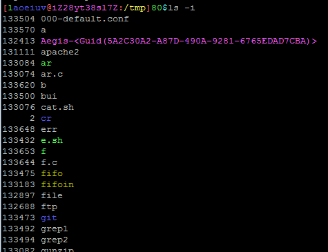
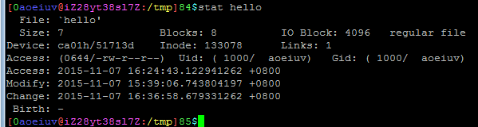
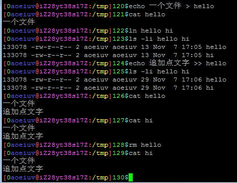
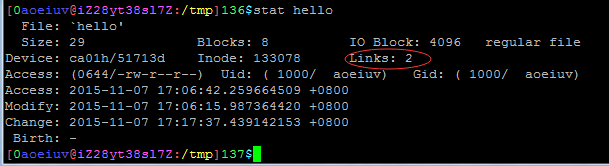
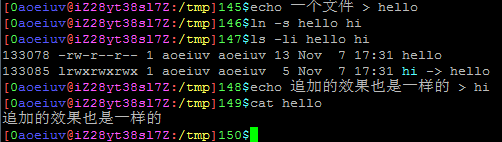
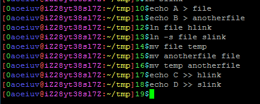
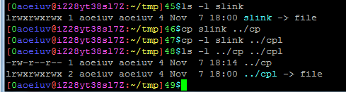
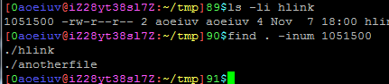

链接的意义，有时候有的文件我们可能希望他们的内容是一样的，当其中一个文件改变时，另一个也一样改变，也就是读取出来要完全一样，首先说一下，这东西是依赖文件系统的，Linux常用的文件系统ext支持，windows的fat不支持，ntfs在win7以后有mklink，在Linux上不支持，所以先介绍一个在ext里代表不同文件的东西，inode，inode是一个数字，一个ext分区里，所有的文件和文件夹都有且仅有一个inode，inode决定这个文件在硬盘中存储的位置，相同的inode表示文件存在硬盘的同一位置，不同的inode表示文件存在硬盘的不同位置，ls -i可以看见文件的inode。

还有个更详细的命令，也可以看到inode，stat。

ln命令默认产生硬链接(hard link)。

产生的硬链接和源文件没有区别，inode相同，除了都存在硬盘里的同一位置，没有从属关系，没有谁是谁的链接的关系，两者都是常规文件，两者都被删除以后，这部分数据才算是被删除了，才有可能被新的文件覆盖，要注意的是，文件夹不能建立硬链接，硬链接不能跨硬盘，跨分区，stat命令可以看出有多少个文件链接到相同的位置，正常文件的Links数目是1，就是文件本身。

ln -s产生软链接(符号链接)(symbolic link)

对软链接的读写都会作用到源文件上，这点从效果上看，和硬链接一样，但是有很大的本质不同，首先，产生的软链接和原文件是"不同"的文件，它们的inode是不同的，代表它们是存在硬盘上不同位置的文件，其次，软链接不是常规文件，文件类型那个位置写的是l，是软链接专用的文件类型，大小也和原文件无关，这种类型专门是用来指向另一个文件的，软链接文件存着对方的路径(相对绝对路径都可以，甚至存不存在都可以)，也只是简单的存一个路径，读写的时候直接读写软链接指向的文件，练习，回去做的，下图几个命令，求结果这4个文件读出来的内容，先猜一下结果，再尝试一下。

复制软链接，硬链接是普通文件，正常使用没问题，但软链接不同，正常复制是通过读和写，但是软链接读出来的是它指向的文件的内容，写生成的文件也只会是常规文件，因此cp命令有个参数可以用来复制软链接，但是要注意，软链接如果是相对路径，复制到其他目录后，相对路径的起点也变了。
cp -l

这个参数不只可以用来复制软链接，有名管道也可以，其实cp -l和ln产生硬链接的效果是一样的。
根据inode找文件，参数-inum后面跟上inode就可以筛选出指定inode的文件。
